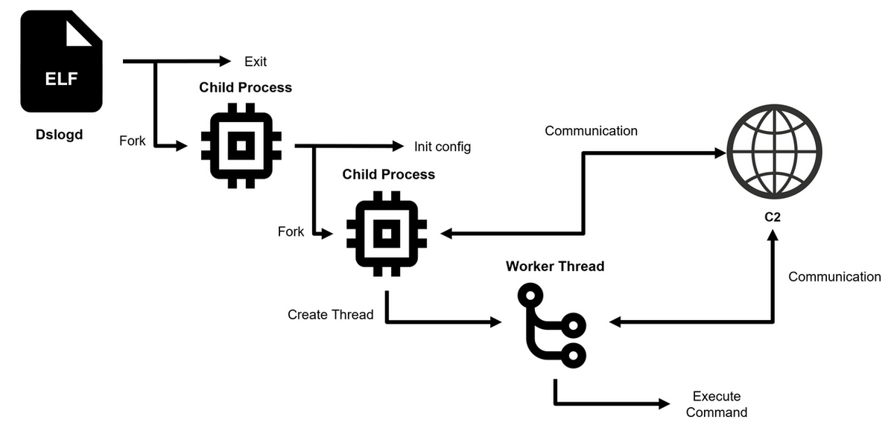

🐚 DslogdRAT Malware Analysis Report
📄 Executive Summary
DslogdRAT is a Linux-based Remote Access Trojan targeting Ivanti Connect Secure VPN appliances, first seen in December 2024. It leverages zero-day vulnerabilities CVE‑2025‑0282 and CVE‑2025‑22457, later tied to China-nexus APT group UNC5221 (merged with UNC5337).
Featuring time-restricted communication, multi-stage process forking, and firmware-level persistence, DslogdRAT provides remote shell access, file operations, and proxy tunneling while remaining covert.
C2 IP: 3.112.192[.]119Activity Window: 08:00–20:00 (configurable)Persistence: Firmware-embedded, survives patching/reboots
🧬 Malware Overview
Name: DslogdRATType: Remote Access Trojan (RAT)Platform: Ivanti Connect Secure (Linux-based)Language: C (with Perl CGI loader)Delivery: Web shell via CVE‑2025‑0282 exploitationPersistence: Firmware-levelAttribution: UNC5221 / UNC5337 (China-linked APT)
🛠️ Infection & Execution Flow

Initial Access
Exploited: CVE‑2025‑0282 (stack overflow, unauthenticated RCE)Web Shell: /dana-na/cc/ccupdate.cgi triggered by cookie DSAUTOKEN=af95380019083db5
Execution Stages
Stage 0: Parent launches, spawns child, exitsStage 1: XOR-decrypts config → idle loop → spawns RATStage 2: RAT connects to C2, spawns thread, executes commands
🔍 Configuration Offsets
Offset
Description
0x0 ConfigTag (identifier) 0x4 Listen mode flag 0x8 C2 IP 0x108 C2 Port 0x10C Sleep time (ms) 0x110 Timeout value 0x114 Shell filepath 0x214 Shell disguise string 0x314 RAT worker thread name 0x414 Node name string 0x514 Proxy server 0x614 Proxy user 0x714 Proxy password 0x814 Proxy port 0x818 Lower hour limit (start) 0x81C Upper hour limit (end) 0x820 Enable source port 0x824 setsockopt() value 0x828 Source port 0x82C Enable sleep flag 0x830 Duplicate sleep flag
🧪 Command Reference Table
Opcode (Hex)
Command
Description
0x04 File Download Send files from host to C2 0x08 Set Upload File Prepare for file upload 0x0A File Upload Receive file from C2 0x0C Shell Launch remote shell session 0x0D Get Shell Data Send command output to C2 0x0E Exit Shell Close shell session 0x11 Set Sleep Time Adjust RAT sleep cycle 0x13 Run Proxy Start tunneling function 0x16 Get Proxy Data Receive tunneled traffic 0x17 Stop Proxy Stop specific proxy 0x18 Stop All Proxies Terminate all proxy sessions 0x28 Forwarding Enable traffic forwarding 0x29 Stop Forwarding Disable traffic forwarding
📁 Known Malware File Paths & Hashes
File
Path
SHA256 Hash
DslogdRAT
/home/bin/dslogd
1dd64c00f061425d484dd67b359ad99df533aa430632c55fa7e7617b55dab6a8
Webshell
/home/webserver/htdocs/dana-na/cc/ccupdate.cgi
f48857263991eea1880de0f62b3d1d37101c2e7739dcd8629b24260d08850f9c
SPAWNSNARE
/bin/dsmain
b1221000f43734436ec8022caaa34b133f4581ca3ae8eccd8d57ea62573f301d
🛡️ Mitigation & Response
Update ICS to version 22.7R2.6 or later
Factory reset infected appliances (firmware persistence)
Monitor for web shell paths and DSAUTOKEN cookies
Detect XOR-encoded TCP traffic during 08:00–20:00
Deploy YARA/Sigma rules to detect opcode/XOR patterns
✅ Conclusion
DslogdRAT is a sophisticated threat targeting VPN infrastructure with time-based evasion, firmware persistence, and stealthy RAT capabilities. Immediate patching, behavioral detection, and full appliance resets are vital to stop reinfection and long-term espionage.
🔐 Secure your perimeter. Audit your firmware. Respond with urgency.